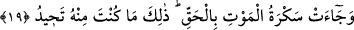

19. Ölüm sarhoşluğu gerçekten gelir de: İşte (ey insan) bu, senin öteden beri
kaçtığın şeydir, denir.
“Ölüm sarhoşluğu gerçekten gelir de:” Buradaki “sekre” ifadesi ölümün şiddeti ve
akıl alan acısından istiare için kullanılmıştır. Ölüm ise kinaye vasıtasıyla istiare
edilmemiştir. Ölüm sarhoşluğunun mazi sigasıyla gelmiş olduğunun belirtilmesi, onun
mutlaka vuku bulacağını ve vukuunun gerçekten yakınlaştığını bildirmek içindir. Sanki o
adeta gelmiş ve vuku bulmuş gibi olmuştur. Mesela ordunun gelmesinin yaklaştığını
haber vermek üzere “ordu sizin üzerinize geldi” denilir. Mânâ şöyledir: İnsana gelip
onu bütünüyle kuşatması ve aklını örtmesi yönüyle onu sarhoş yapan ölümün şiddeti
geldi. İşin hakikati, Allah’ın kitabı ve onun peygamberlerinin anlattığı şeydir. Ölüm
anındaki durumu, kişinin ya saadeti veya şakavetini haber veren bir alamettir. Veya
buradaki “o zeytin ağacı yağ verir” (Mü’minûn, 23/20) âyetindeki “bâ”da olduğu gibi
mülâsebet içindir. Yani gerçekle işin gerçekliğiyle, hikmetle ve güzel bir gayeyle
birleşik olarak anlamına gelir. Bazıları da şöyle demişlerdir: “Ölüm, hakkın ta kendisi
olan Allah’ın emriyle geldi, vuku buldu.”
Bir adam Hz. Ömer (r.a.)’a gelmiş ve “ben fitneyi severim, hakkı kötü görürüm,
görmediğim şeye de şehadet ederim” demiş. Bunun üzerine Hz. Ömer onu hapsetmiş. Bu
husus Hz. Ali (k.v.)’e ulaşmış. Hz. Ali “ey Ömer onu zulmederek hapsettin” demiş. Hz.
Ömer “Nasıl?!” diye tepki verince, Hz. Ali “Çünkü o mal ve evladı sever. Nitekim
Allah «Biliniz ki, mallarınız ve evlatlarınız sizin için fitnedir» (Enfâl, 8/28)
buyurmuştur. Ölümü de kötü görür ki ölüm de haktır. Nitekim Allah bu hususta «Ölüm
anı hakkıyla gelir» (Kaf, 50/19) buyurur. Yine o, Allah’ı görmediği halde onun tek
olduğuna şehadet eder” diyerek cevap vermiş. Bunun üzerine Hz. Ömer, “Ali olmasaydı
Ömer helak olurdu” demiştir.
“İşte (ey insan) bu, senin öteden beri kaçtığın şeydir, denir.” Ölecek olan kişiye kâl
diliyle olmasa da hal diliyle ya da melekler tarafından “ey insan bu ölüm öteden beri
kendisinden kaçtığın şeydir” denilir.
Aksine sen dünya hayatına olan muhabbetinden dolayı ölümün hiç gelmeyeceğini
düşünürsün. Âyette de “daha önce sizin için bir zeval olmayacağına yemin etmemiş
miydiniz!!” (İbrâhim, 14/44) buyrulmuştur. Yani siz kibirle, küstahça, cehaletle ve
aptalca dilinizle; ya da yüksek yapılar inşa etmek, çok uzak hedefler koymak ve bu
dünyadan ölüme intikali kendisine hatırlatmamak suretiyle hal diliyle yemin ettiniz.
Sizler şu andaki dünyevi hazlardan yararlanmanın hiçbir zaman yok olmayacağını
zannettiniz. Âyetteki hitap iltifat sanatıyla daha önce bahsi geçen insana yöneliktir. Ölüm